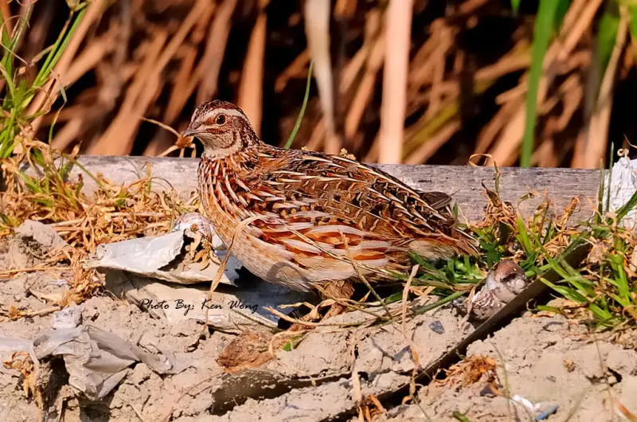

Pamja Si zogj, si meshkujt, ashtu edhe femrat kanë të njëjtin lloj plumage dhe ngjyrosjeje. Kokat e tyre janë me ngjyrë të njomë, me njolla të vogla të zeza që hedhin zonën sipër sqepit. Krahët dhe pjesa e pasme e zogthës janë ngjyrë kafe të zbehtë, pjesa e pasme ka edhe katër vija kafe që ecin përgjatë gjatësisë së saj. Një shirit i zbehtë ngjyrë kafe të verdhë i rrethuar nga vija më të vogla të zeza shkon poshtë majës së kokës. Të dy të rriturit meshkuj dhe femra kanë plumage kryesisht kafe. Megjithatë, shenjat në fyt dhe gji, Thjerrëzat japoneze shumohen në Azinë Lindore dhe Qendrore, në zona të tilla si Mançuria, Siberia juglindore, Japonia veriore dhe Gadishulli Korean. Megjithatë, ato janë vërejtur gjithashtu të shumohen në disa rajone të Evropës, si dhe në Turqi. Këta janë kryesisht zogj që jetojnë në tokë që kanë tendencën të qëndrojnë brenda zonave të bimësisë së dendur për t'u mbuluar dhe për t'iu shmangur predacionit. Habitatet e tyre natyrore përfshijnë fushat me bar, shkurret përgjatë brigjeve të lumenjve dhe fushat bujqësore që janë mbjellë me të mbjella
